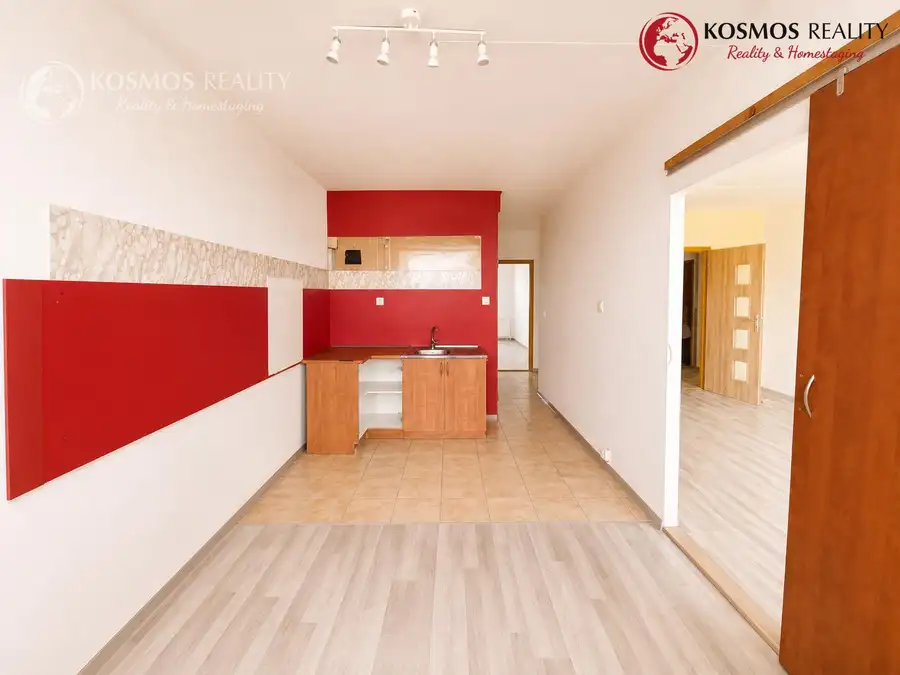
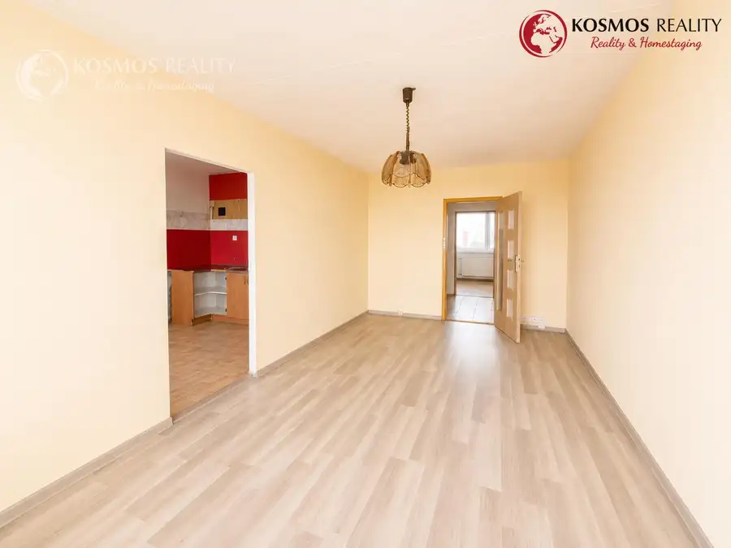
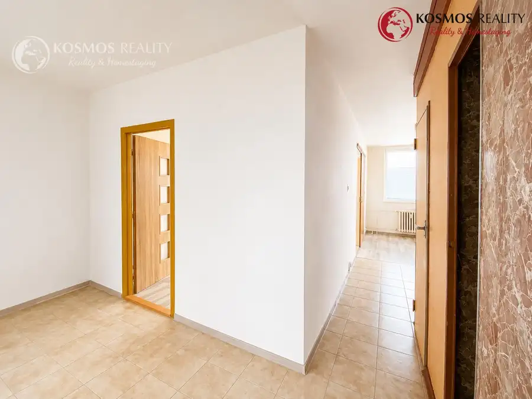
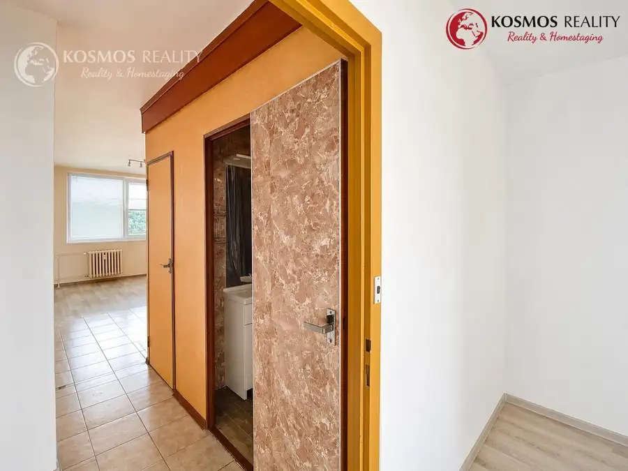
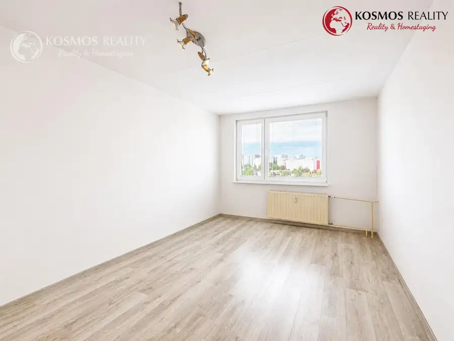
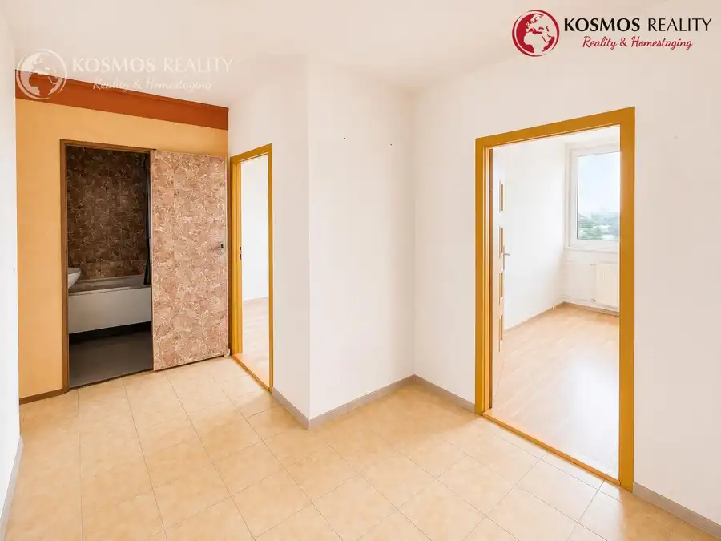

3-izbový byt s lodžiou, Dénešová ulica –Košice,Sídlisko KVP
Sídlisko KVP, Košice






- Dispozícia3-izbový
- Plocha72 m²
- StavPôvodný stav
- VlastníctvoOsobné
O nehnuteľnosti
REZERVOVANE.Kosmos Reality a Ing. Jana Šrámková vám exkluzívne ponúkajú na predaj 3-izbový byt s lodžiou s výhľadom na Myslavský les, na vyhľadávanej ulici Dénešová v mestskej časti Košice – Sídlisko KVP.Byt sa nachádza na vysokom poschodí bytového domu a ponúka krásny výhľad z priestrannej lodžie. Nehnuteľnosť je v pôvodnom stave, čo predstavuje ideálnu príležitosť na rekonštrukciu podľa vlastných predstáv.Základné informácie:Typ bytu: 3-izbový byt, pražský typnepriechodné izbyPodlahová plocha bytu: 68 m²Lodžia: 6 m²Stav: pôvodnýOrientácia: východ (2 izby) / západ (kuchyňa a obývacia izba)Vchodové dvere: bezpečnostnéPríslušenstvo: komora a pivnicaV bytovom dome sa nachádzajú spoločné priestory na uskladnenie bicyklovPlánovaná kompletná obnova bytového domuVeľkou výhodou je, že ešte v tomto roku začne komplexná rekonštrukcia bytového domu, ktorá bude zahŕňať:zateplenie fasády,novú strechu,rekonštrukciu lodžií,výmenu vnútorných elektrických rozvodov v bytovom dome.V byte sa aktuálne využíva elektrická energia a plynomer je plánovaný na demontáž.LokalitaSídlisko KVP patrí medzi obľúbené mestské časti Košíc vďaka výbornej občianskej vybavenosti. V bezprostrednom okolí sa nachádzajú:materské a základné školy,potraviny a obchodné prevádzky,zdravotné stredisko,zastávky MHD,detské ihriská a množstvo zelene.Cena nehnuteľnosti: 198.000 EUR. Nehnuteľnosť je bez ťiarch a kúpou voľná. Obhliadky a informácie:Ing. Jana Šrámková, 0908 583 890, sramkova@kosmosreality.skTúto nehnuteľnosť je možné financovať aj prostredníctvom hypotekárneho úveru, pomôžeme Vám s jeho vybavením za výhodných podmienok.Cena nehnuteľnosti je uvedená vrátane provízie pre realitnú kanceláriu, kde je zahrnutý kompletný sprostredkovateľský servis od potrebných obhliadok nehnuteľnosti až k protokolárnemu odovzdaniu, zabezpečenie rezervačných a kúpnych zmlúv cez advokátsku kanceláriu (autorizované aj neautorizované zmluvy), overenie podpisov predávajúcich, štandardný poplatok na kataster (vklad KZ).Spoluprácou s nami získate:Exkluzívny prístup aj bez exkluzívnych zmlúvProfesionálne a férové jednanieOsobne nabrané ponukyKomplexné sprostredkovanie predaja/kúpy nehnuteľnostiŽiadne skryté odmenyAktualizácia ponúk a cienAktívne riešenie dopytujúcichNová služba HOMESTAGING – kosmosreality.sk/home-staging
Parametre
- Cellar area
- 2 m²
- Cena vrátane energií
- Nie
- Druh
- 3 izbový byt
- Dátum zverejnenia
- 10. 07. 2026
- Energetický certifikát budovy
- nie je
- Orientácia
- Západná, Východná
- Plocha lodžie
- 6 m²
- Počet izieb / miestností
- 3
- Počet lodžií
- 1
- Počet pivníc
- 1
- Stav nehnuteľnosti
- Pôvodný stav
- Typ
- Predaj
- Typ konštrukcie
- Panelová
- Umiestnenie
- Ďalšie nadzemné podlažie
- Vlastníctvo
- Osobné
- Vybavenie
- Lodžia, Pivnica, Špajza, Výťah
- Vykurovanie
- Ústredné
- Zariadenie
- Nezariadené
- Úžitková plocha
- 72 m²
Kde to je


Mohlo by Vás zaujímať
 BytNové
200 000 €REZERVOVANE 2izbový byt, 54m2, Pasteurova, Košice-Juh
Juh, Košice
2-izbový54 m²3. podlažie
BytNové
200 000 €REZERVOVANE 2izbový byt, 54m2, Pasteurova, Košice-Juh
Juh, Košice
2-izbový54 m²3. podlažie
 Komerčné priestoryNové
Cena na vyžádáníKancelársky priestor s parkovaním, 73,5m2, Južná Trieda
Juh, Košice
73 m²
Komerčné priestoryNové
Cena na vyžádáníKancelársky priestor s parkovaním, 73,5m2, Južná Trieda
Juh, Košice
73 m²
 Komerčné priestoryNové
Cena na vyžádáníReprezentatívny priestor, 55m2, Dunajská, Košice
Juh, Košice
55 m²
Komerčné priestoryNové
Cena na vyžádáníReprezentatívny priestor, 55m2, Dunajská, Košice
Juh, Košice
55 m²